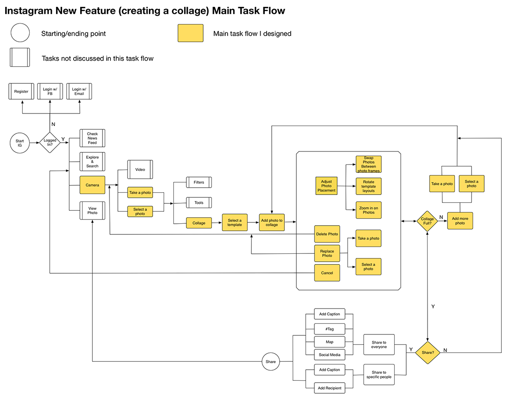

Instagram is a popular social media app that allows users to share interesting photos with the world. As a design challenge, I researched, ideated, wireframed, and prototyped a potential feature that Instagram users would like to have. This feature is simple to use, streamlined with the updated Instagram UI. The new feature is "to create photo collages" in Instagram. It gives users more freedom to capture the moments they love.
Epics help me fully think through my designs. Here are the epics I’m addressing with this project.
Users can:
To try and understand the people I am designing for, I created a persona. This persona will guide my feature development and help me focus on the key problem I am solving. It makes the design decisions less abstract and more human.

Some people think of Instagram as a camera and some people think of it more as a photo editing app. Instagram recently included a lot more editing features into the application, but they kept the camera experience very clean. I chose to preserve this user flow, and put my new photo collage feature within Instagram’s editing section. I’ve included my user flow chart below. The highlighted section is the main flow of my new feature.
My next step was starting to visualize my new user task flow. I started with sketches on paper. I had a few different versions, but ended up deciding that the version below was the most promising. After some quick usability tests, this version enabled users to create collages the quickest and easiest.
Below are the detailed wireframes I developed based on the sketches above. I assumed that maximum of 3 photos in a collage would be the best for the feature for now, because it would give users just enough flexibility and control to enjoy the process of making and sharing photo collages. This is still a hypothesis that needs more testing. My assumption is based on user interviews, the size limitation of the mobile devices and the ease of use to create something with quality.
I tested my low fidelity wireframes with some colleagues and created a quick high fidelity prototype to test more. This prototype helps me further test my user task flow and catch any errors in the early stage. I am going to do more usability testing in the future to validate my design — I want to be absolutely certain that users love it.
Below is a video demonstrating how users might use this photo collage feature in Instagram.
Follow me on @linafab